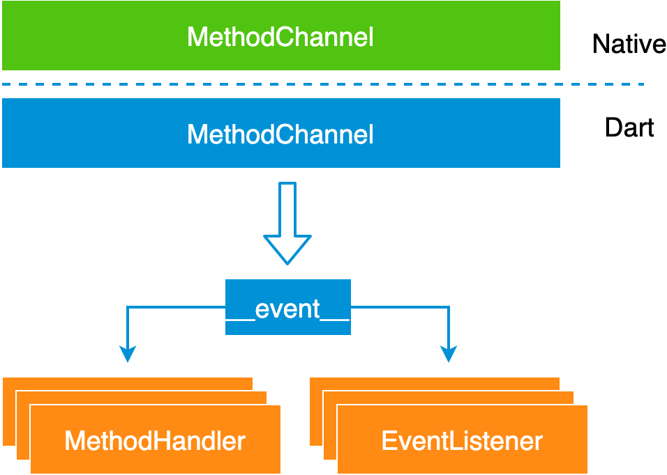

Boost全双工通道
在Flutter与Native通信过程中，框架本身提供了一套Channel机制，方便开发者进行数据的双向读写。
这一节的标题"偷用"了数据通信中的"双工"概念，来表示Flutter通信的能力。通过在Native和Dart侧定义Channel通道，开发者可以非常简单就实现框架级别的数据交互。这比WebView和Native直接的通信好用很多，性能也更优，并且不会触发字符串长度问题导致的通信内容截断，有点扯远了。
在Flutter中，根据不同的使用场景Channel可以进一步细分，目前提供的有：
- BasicMessageChannel 基础消息通道
- MethodChannel 方法通道
- OptionalMethodChannel 继承自MethodChannel
- EventChannel 流式通道
如果读者对Channel的使用不慎了解，可以参考通道的使用文档，写的比较清楚：
https://flutter.dev/docs/development/platform-integration/platform-channels
Boost通信通道
在Boost里面通信的场景主要是定义双方的页面栈操作和相关联的事件消息，它使用的是MethodChannel
/// boost_channel.dart
final MethodChannel _methodChannel = MethodChannel("flutter_boost");
由于通道本身是有开销的，在整个Boost中只有这一个通道，他作为全局单例被共享。我们前文汇总分析到的页面的事件传递，和页面入栈操作这些都是通过这一个通道来完成的。
在源码中，定义了一个BoostChannel的操作类，内部封装了MethodChannel的使用。它定义了两大类操作，收消息和发消息。
下面我们通过一张图，来概括BoostChannel所做的事情： 
针对消息类的，无论是收还是发，都约定了一个固定的字符串作为事件名__event__。对Native侧发来的消息的识别和监听，事件的名字固定为__event__。其他类型的事件全部进行转发，当做普通方法，有外部进行注册监听。
发消息包括事件的消息两类，分别是sendEvent和invokeXXXMetohd。
/// boost_channel.dart
_methodChannel.setMethodCallHandler((MethodCall call){
if (call.method == "__event__") {
String name = call.arguments["name"];
Map arg = call.arguments["arguments"];
List<EventListener> list = _eventListeners[name];
if (list != null) {
for (EventListener l in list) {
l(name, arg);
}
}
}else{
for(MethodHandler handler in _methodHandlers) {
handler(call);
}
}
return Future.value();
});